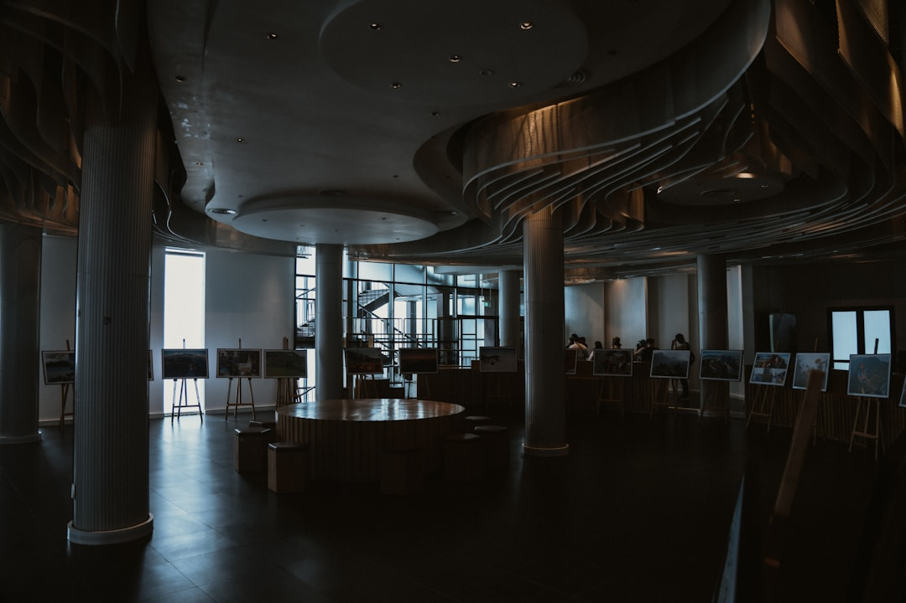
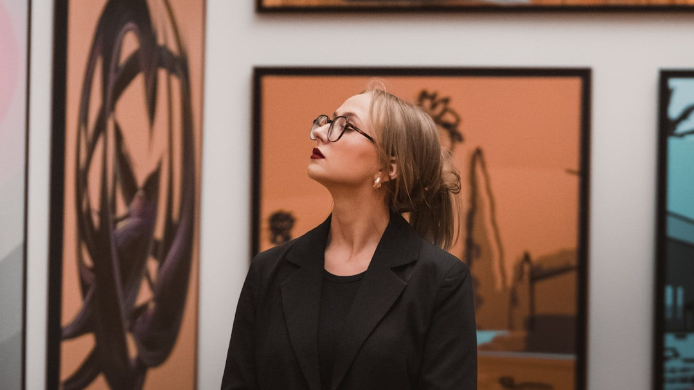

Journey
A trajectory built over time through research, experience, exhibition, and fidelity to a singular voice.
Beginnings
First experiments, first compositions, and a growing instinctive relationship to color. Passionate about sculpture and painting, I initially developed my techniques in a self-taught way. From an early stage, creation became a space for personal exploration — a way to give form to what could not be expressed otherwise. It was during my law studies at Panthéon-Sorbonne University that I began exhibiting my work to the public, discovering the profound experience of sharing an artistic vision and confronting it with the gaze of others.
Training
A deeper gaze, dialogue with art history, and the shaping of a personal artistic direction. After graduating in 2004 from Paris 1 Panthéon Sorbonne, I chose to deepen my practice by joining the Heatherley School of Fine Art in London, where I specialized in sculpture. This period marked a decisive turning point, allowing me to structure my approach while preserving an essential freedom in gesture and experimentation.
Visibility
A more assertive phase of circulation, with works conceived for space, series, and encounter. Gradually, my work found its first spaces of recognition. Smaller-scale pieces entered private collections, marking the early stages of a discreet yet meaningful diffusion of my artistic research. These first acquisitions strengthened my commitment to pursuing a sincere and demanding artistic path.
Maturity
A more identifiable universe emerges, where abstraction, presence, and material tension intensify. My work progressively developed around a central tension: making the invisible visible. Exploring emotions, inner fractures, and processes of transformation. Forms, lines, and materials embody this inner movement, oscillating between imbalance and reconstruction. My artistic language is rooted in this search for an unstable balance, where each work becomes a trace, a memory of passage.
Today
Ongoing creation, development of series, and openness to new spaces for dialogue and exhibition. Today, my practice unfolds within a demanding continuity, driven by an ever-evolving artistic research. It is shaped by a balance between control and freedom, intuition and reflection, where each work extends an existing path while opening new directions. For me, creating is an ongoing passage: a search, a movement, a way of inhabiting the world differently.

